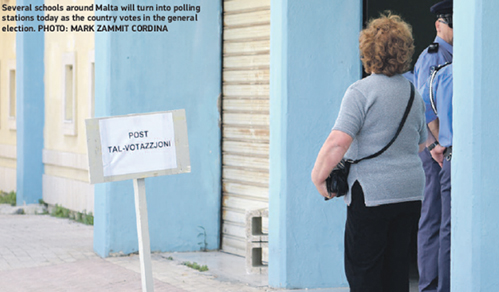

Notícias Nacionais de Malta
sexta-feira, 2 de junho de 2017, 23 : 50
Malta vai às eleições hoje
O resultado deve ser conhecido amanhã de manhã
Após uma exitosa campanha eleitoral de 33 dias, os eleitores de Malta e Gozo irão hoje às eleições na 12ª eleição geral desde a Independência.
Existem 333.485 eleitores aptos a votar, no entanto 8.372 não poderam exercer o seu direito de voto por não terem retirado seu documento de votação. O número de documentos de votação não retirados equivale a 2,4 por cento da população votante, muito semelhante ao ocorrido em 2013, quando dois por cento renunciaram ao direito de voto.
Esta é a segunda eleição do primeiro-ministro Joseph Muscat ao comando do Partido Trabalhista e sua primeira como chefe de governo. É o primeiro teste eleitoral de Simon Busuttil como líder do Partido Nacionalista.
As campanhas eleitorais terminaram quinta-feira com os partidos trabalhistas e nacionalistas realizando reuniões em massa no Ħal Farway e em Floriana, respectivamente.
Elas foram seguidas por uma maratona de transmissões políticas na televisão ONE e NET até a meia-noite.
Os eleitores terão um punhado de partidos políticos para escolher, tornando a urna mais cheia do que era há quatro anos. O PL, PN e Alternattiva Demokratika serão acompanhados pelo Movimento dos Patriotas Maltês, Alleanza Bidla e de dois candidatos independentes.
As estações de votação iram abrir às 7h e devem fechar às 10h.
O Dr. Muscat vai votar em sua cidade natal, Burmarrad, enquanto o Dr. Busuttil lança seu voto em Lija.
O presidente da AD, Arnold Cassola, votará na escola primária de Pembroke.
Uma vez que as assembléias de voto fecham esta noite, a atenção mudará para a sala de contagem em Naxxar, onde durante toda a noite, a equipe de contagem colocará as cédulas viradas de cabeça para baixo e as agrupará em pacotes de 50.
O importante exercício de triagem de votos, no qual os votos são virados para cima e colocados nas suas respectivas pilhas, de acordo com o voto número um, deverá começar às 10 da manhã.
Se o resultado for evidente, os partidos políticos devem estar em condições de anunciar o vencedor dentro de uma hora ou mais.
Levará mais tempo se o resultado for muito próximo.